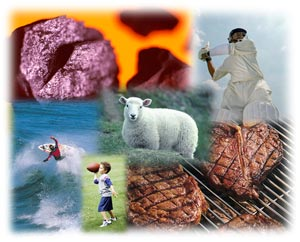

Il mondo della pubblicità!
La pubblicità è una fonte d'informazione molto pervasiva, quindi influisce sui sogni e sulle voglie dei consumatori. Inoltre, è una forma di comunicazione che rivela sfumature culturali e di conseguenza aiuta a capire l'identità di una certa società. Le campagne pubblicitarie d'epoca possono essere perfino esemplificative di un momento storico di un paese!
Il Castello di Rivoli (Torino) è il primo vero e proprio museo della pubblicità in Italia, nato con l'obiettivo di raccogliere, ordinare, conservare, rendere consultabili al pubblico manifesti, filmati e altri materiali pubblicitari.
Go to www.castellodirivoli.it if you wish to find out further information about the advertising housed in the museum.
The focus of this attività is to examine how la pubblicità reflects a society's cultural identity. You will look at some Italian and Australian pubblicità/spot with the purpose of identifying cultural elements of the respective countries.
La pubblicità italiana
Select a variety of Italian advertisements.
You may wish to focus on a particular theme and select a combination of print/radio/television/Internet advertising.
Try and choose advertisements for products that highlight cultural identity.
Possible sources:
- Italian magazines/newspapers
- Italian television
- Italian radio – can also be accessed on the Internet. For example, www.radio.rai.it
- Italian Internet sites.
You can also access video/television ads on the Internet. Siti consigliati
Some examples that you may wish to look at include:
- Lavazza coffee
- Baci Perugina chocolates
- Barilla pasta
Examine la pubblicità/lo spot that you have selected and complete the feedback form for the advertising agency.
Group discussion
Discuss how the language and images used in the advertisement are likely to entice and convince consumers.
Identify which aspect(s) of Italian culture/lifestyle/identity are reflected in the advertisement. Discuss how they are portrayed.
Discussion should be in Italian. If you find this too difficult it can be done in English.
Refer to
The following guide has three elements to help you with the discussion.
LanguageLinguaggio
Quale forma è usata? Tu, voi, Lei?
Che tono è creato?
Che effetto ne potrebbe avere sui consumatori?
Identifica i sostantivi, gli aggettivi, gli avverbi e i verbi usati nella pubblicità.
Nella tua opinione quali parole hanno la massima attrattiva/appeal? Spiega perché.
Is the tu, voi, Lei form of address – used?
What tone is created?
What effect is this likely to have on consumers?
Identify the nouns, adjectives, adverbs and verbs used in the advertisement.
In your opinion which words have the most appeal? Explain why.
Visual componentComponente visiva
Quale messaggio/atmosfera/umore trasmettono le immagini?
Quali aspirazioni/sogni/desideri suscitano/creano le immagini?
What message/atmosphere/mood do the images convey?
What aspirations/dreams/desires do the images arouse/create?
Cultural identityIdentità culturale
abbigliamento
Come sono vestite le persone?
aspetto fisico
Com'è il loro aspetto fisico?
comportamento
Quali gesti usano le persone?
interazione
Come interagiscono le persone?
attività
In quali attività sono coinvolte le persone? Dove?
famiglia
Quali aspetti della vita familiare sono presenti?
casa
Quale immagine/visione della casa è trasmessa?
cucina
Cosa mangia e beve la gente? Dove?
valori
Quali valori sono evidenti?
In che modo sono riflessi?
dress
How are people dressed?
physical aspect
What is their physical appearance like? (ie How are they groomed?) Hair/makeup etc.
behaviour
What gestures do the people use?
interaction
How do the people interact with each other? (For example, handshake.)
activities
What activities are people engaged in? Where?
family
Which aspects of family life are present?
home
What image of the home is portrayed?
cuisine
What are people eating and drinking? Where?
values
What values are evident?
How are they reflected?
You may include other relevant questions of your own.
La pubblicità in Australia
- Select a variety of advertisements in the Australian context on a similar topic.
- Discuss which aspects of Australian culture/lifestyle/identity are reflected in the advertisement? Use La pubblicità: guida all'analisi above to help direct the discussion.
- Compare the Italian and Australian culture/lifestyle/identity portrayed in the advertisements. Make a note of the points discussed. Scrivi gli appunti in italiano.
Similarità Differenze Italia Australia Which of the advertisements that you looked at has the most appeal for you? Why?
Riflessione
Reflect on how la pubblicità/lo spot that you have examined gave you an insight into the Italian culture.
Write notes in your diary/journal on what you have discovered, what further information you would like to know and how you can find out.
Scrivi in italiano.
| Cosa hai imparato? | Cos'altro vuoi sapere? |
|---|---|
Come potresti scoprire ulteriore informazione sull'argomento?